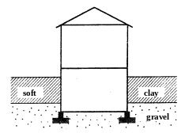
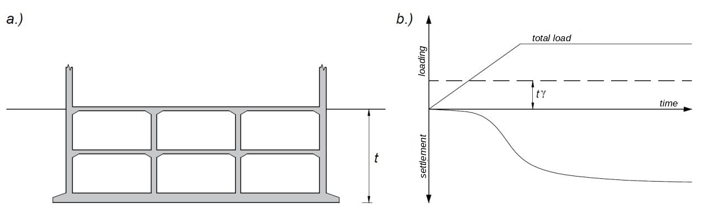
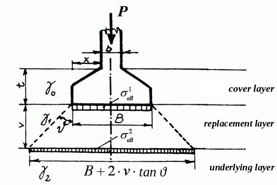
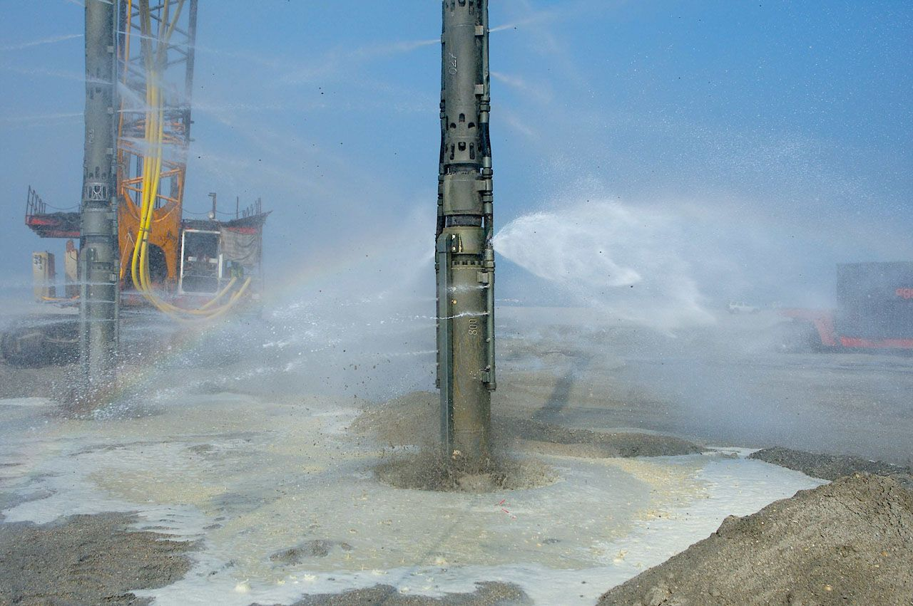
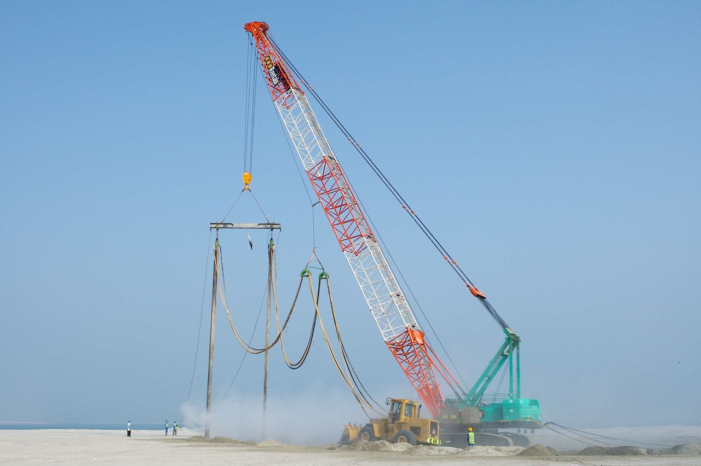
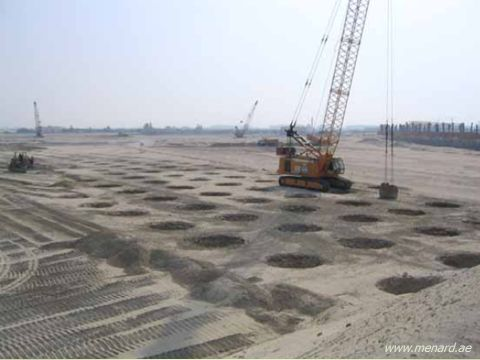
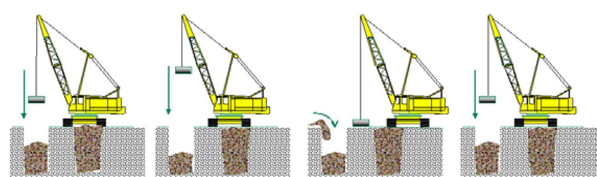
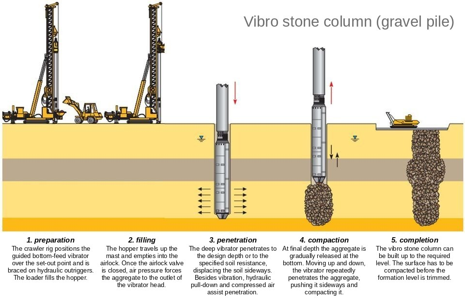
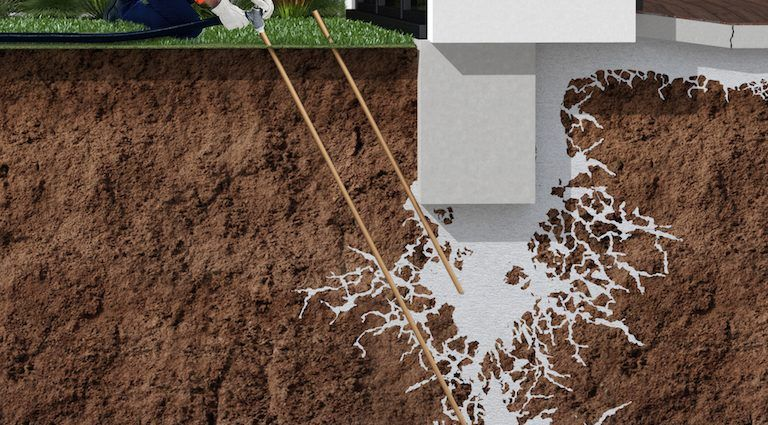
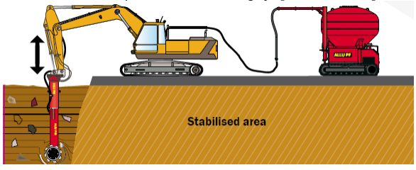

Settlement tolerance: how much can the building take?
A foundation sized for bearing resistance is not finished yet: we also have to check whether settlements develop that would harm the structure. Under Hungarian ground conditions it is often not the ultimate but the serviceability limit state that governs.
Absolute settlement
Vertical movement. It governs for sewer and other utility connections and for adjoining buildings. Generally 50 mm is acceptable (also according to EN 1997-1).
Differential settlement
It causes tilting, bending and sagging; the additional internal forces (bending moment, shear force) damage the structure and cracks appear. This is what damages the building – not the absolute settlement.
Foundation movements – try it out!
The quantities to check according to Annex H of EN 1997-1: s settlement, δs differential settlement, θ rotation, ω rigid-body tilt, Δ relative deflection, Δ/L deflection ratio and β relative rotation (angular distortion), as well as horizontal displacement and vibration amplitude. The limiting values are set by the structural designer.
Settlement of four foundation points (L = 12 m)
50 mm
absolute settlement – generally acceptable
20 mm
differential settlement of adjacent columns – generally acceptable for ordinary structures; the δs/L ratio governs
1/500
relative rotation – generally acceptable structurally; 1/150 can already cause failure
Outlook: international experience shows that a tilt of about 1/300 is already noticeable to the eye, structural damage to frames begins at a relative rotation of 1/150–1/250, and cracking of walls and partitions may already appear at about 1/500.
What does settlement tolerance depend on?
By structure
Statically indeterminate structures (continuous beams, frames, arches) are sensitive – and so are precast panel and block buildings (because of the corrosion protection of the steel inserts in their connections).
By size
Structures with a high centre of gravity: water towers, factory chimneys, wind turbines. And smaller, lower buildings are more sensitive because of their lower stiffness – most damaged buildings in Hungary have 1–3 storeys.
By use and soil
Where freedom from cracks is a condition of safe operation (tanks, pools). On cohesive soil (clay) about one and a half times the differential settlement is acceptable compared with granular soil – the building materials cope better with the slow consolidation.
Six basic cases of differential settlement
1 · Different compressibility
Same contact pressure, but a lower modulus → larger settlement on the soft side.
2 · Eccentric load
e ≠ 0: trapezoidal contact pressure; for a rigid foundation, linearly varying settlement.
3 · Different foundations and stiffness
A differential settlement imposed between a pile and a shallow foundation.
4 · Stress superposition
The Δσ of the neighbouring building adds up → they tilt towards each other (e.g. the Canadian “kissing” silos).
5 · Settlement trough
Tunnel, cavity: a settlement trough imposed from outside.
6 · One-sided consolidation
Groundwater lowering (e.g. an excavation) → Δσ′ increases on one side only.
| Crack width | Category | Action |
|---|---|---|
| < 0.1 mm | hairline crack | aesthetic |
| 0.1–1 mm | very slight | can be repaired when redecorating |
| 1–5 mm | slight, visible cracks | painting, repair plaster |
| 5–15 mm | moderate | can be repaired by replastering (with expanding cement) |
| 15–25 mm | severe – doors and windows stick | partial rebuilding |
| > 25 mm | very severe | structural strengthening; in worse cases partial or complete rebuilding |
Cracks rise towards the point of larger settlement; the first cracks appear at the weakest points (between the corners of doors and windows).
Self-check · Chapter 1
Four directions – from the ground to the structure
If the calculated settlements are not acceptable, the original design has to be changed. The methods can be combined – the choice depends on the subsoil, the depth of the intervention and the cost.
Method selector – which ones are possible?
What is the problem soil?
Where is the groundwater?
How deep is the problem?
Is there a better layer deeper down?
Situation
A simplified decision aid for teaching, based on the conditions of application of the methods – the real choice is always based on ground investigation and calculation.
Summary table
| Method | Suitable soil | Depth, typical data | Limitation, remark |
|---|---|---|---|
| a) Lower contact pressure | if there is a less compressible layer deeper down | wider foundation, lower q | the weight and the influence depth increase; with reversed layering it can make things worse |
| b) Deeper foundation level | a better bearing layer within a few metres | basement: the excavated soil unloads the ground | a strip footing deeper than 2–2.5 m is not economical |
| c) Soil replacement | any poor soil, in a shallow zone | 50–80 cm, compacted in layers ≤ 30 cm | only above the water table; widening: B + 2·v·tanϑ |
| Deep compaction | loose granular soil, fill | vibrator Ø 25–40 cm, with flushing | fines content approx. < 10–12% |
| Dynamic compaction | looser, softer soil, large area | 15–40 t pounder, H = 10–40 m; max. 5–7 m | strong vibration – not next to buildings |
| Stone pillar | very loose, soft soil | granular material pounded in, large-diameter pillars | displacement compaction + load-bearing elements |
| Gravel pile | looser, softer soil (cohesive too) | bottom-feed deep vibrator, Ø ≈ 0.6–1.0 m | also acts as a vertical drain |
| Cement grouting | granular soil coarser than 0.8–1 mm, fissured ground | pipes every 50–100 cm, 7–10 atm | from the bottom upwards; does not penetrate fine soil |
| Two-component grouting | sandy, silty soil | expanding geocomposite | not effective in clay; retrofit strengthening |
| Mass stabilisation | peat, soft clay, organic soil | mixing head 1.5 m × Ø 0.95 m; max. ~7 m | starts from stable ground; hardening takes time |
| e) Preloading | saturated, compressible cohesive soil | surcharge ≥ the later building load | long time – can be accelerated with drains |
| f–g) Structure, sequence | – | rigid or flexible structure, settlement joint | supplementary tool |
| h) Deep foundations | if the bearing layer is deep | pile, diaphragm wall | often the simplest and fastest |
3D settlement simulator
Larger foundation area → lower contact pressure. Deeper foundation level → a better bearing layer and more excavated soil. But does the settlement always decrease? Rotate the 3D model, drag the sliders and watch the stress bulb, the influence depth and the settlement!
Challenge:
Cost index (concrete + earthworks, initial design = 100):
Stress below the foundation level
Settlement as a function of the variable
The simulator follows the steps of the more accurate settlement calculation: permanent load → stress below the footing (below the centre of a rectangular loaded area, Steinbrenner; or Jáky’s linear approximation) → influence depth (Jáky: m₀ = B for a square footing; or the 0.2·σ₀ criterion of Hungarian practice) → summation by layer: s = Σ Δσz·Δh / Eoed. The effect of excavation is taken into account through the net pressure q₀ = q − γ·D; the weight of the footing and the backfill is added to the load. A teaching model, not design software.
Using a lower contact pressure
We build a foundation with a larger area than bearing resistance alone would require. Lower stresses develop under a wider foundation. In many cases, however, it does not reduce the settlement as much as the designer expects:
- the wider footing itself means a greater weight,
- and above all, under a wider foundation the stresses causing compression reach greater depths – the influence depth increases.
It is effective if there are less compressible layers deeper down (case A). In case B, widening puts more stress on the softer clay layer lower down – so the settlement may even increase: exactly the opposite of what we wanted!
Cases A and B – how deep does the stress bulb reach?
Effect of footing size and load on the stresses
The depth of the effect is set by the width of the foundation, the magnitude of the stress by the contact pressure.
Deeper foundation level – and the basement
This comes into consideration if a foundation level in the compressible layer near the surface gives too much settlement and there is less compressible, better bearing soil not too deep down (a few metres). The embedment next to the foundations then increases, so the safety against bearing failure grows and the foundation width can be reduced.
A strip footing deeper than 2–2.5 m is no longer economical – in that case pad foundations (or caisson foundations) are advisable, tied together at the top by a grid of ground beams.
Under such ground conditions it is worth building a basement if the rooms below ground level can also be used. The basement has a twofold effect:
- the foundation level reaches (or may reach) a deeper bearing layer;
- the weight of the excavated soil increases – this unloads the subsoil.
If the mass of soil excavated for the “basement” is greater than that of the structure placed there, the resultant of the effective stresses transferred to the subsoil is “negative”, and the structure (with a sufficiently rigid RC raft) will be practically immobile – this is the principle of the compensated foundation.


Did you know? The 182 m high, 44-storey Torre Latinoamericana in Mexico City (1956) stands on extremely compressible volcanic clay: its base slab is 13.5 m deep, and the load is carried by 361 piles down to a dense sand layer 33 m deep. Its structural and foundation designer, Leonardo Zeevaert, also exploited the weight of the excavated soil – the tower “does not settle, it floats”, and it withstood the magnitude 7.9 earthquake of 1957.
Excavation and compensation
Illustration: approx. 12 kPa/storey + 15 kPa base slab, γ = 19 kN/m³.
Self-check · Chapter 3
Out with the bad soil – in with the good
The highly compressible original soil below the foundation level is excavated over its full thickness (within the stressed zone) or only partly, and replacement soil with better properties – sandy gravel, crushed stone, crushed concrete – is placed in its stead, with adequate compaction.
Load spread in the replacement layer (strip footing)
σ² = P / (B + 2·v·tanϑ) + γ₁·v, γ₁ = 20 kN/m³ – simplified illustration.
💧 Above the water table
Soil replacement can generally be done only above the water table, because otherwise it cannot be compacted.
📏 50–80 cm
Partial replacement is usually sufficient; the usual thickness is 50–80 cm.
🧱 Layers ≤ 30 cm
Compact in loose layers of max. 30 cm. A geogrid, geotextile or composite separation layer may be needed.
↔ Widening
It has to be widened laterally in proportion to the thickness of the replacement layer – a lot of earthworks, and the excavated soil has to be carted away.
Safety against bearing failure has to be verified both on the replacement soil below the foundation level and on the soil below the base of the replacement – and of course the settlements must also stay within the limits. A costly (lengthy) solution; today it is typically used for rafts at ground level.

Watch it as an animation
The video shows the principles of lower contact pressure, a deeper foundation level and soil replacement step by step – with layer-by-layer compaction and load spread.
Self-check · Chapter 4
Compaction: by vibration, dropping weights, stone columns
Ground improvement is the artificial improvement of the properties of the soils below the foundation that are dangerous in terms of settlement – by introducing foreign material, or by compacting the soil. Four mechanical methods are presented below – first, real footage of ground improvement as a whole.
Deep compaction – vibroflotation
To reduce the compressibility and increase the strength of loose granular soils and fills. A vibrating tube (deep vibrator) 25–40 cm in diameter, suspended from a crane, penetrates under its own weight, assisted by water jetting (flushing). The soil around the hole is compacted; as the vibrator is gradually raised, gravel, hoggin, mine waste or sand is fed into the hole and compacted by the rising vibrator.
When does it work? – fines content
Outlook: vibratory compaction is effective if the fines content stays below about 10–12% – the fine particles “absorb” the vibration energy.


Dynamic compaction
The compaction effect is achieved by repeatedly dropping a 15–40 tonne pounder from a height of H = 10–40 m. To be determined: the weight of the pounder, the drop height, the compaction grid, the number of drops per phase and the duration of the rest periods. Effective to a depth of max. 5–7 m; for compacting larger areas on loose soils (e.g. under heavily loaded warehouse floors). Applicable only in looser, softer soils.
Drop it yourself!
Ménard–Mayne estimate: d ≈ n·√(W·H) (W in tonnes, H in metres), n ≈ 0.5 for most soils, 0.35–0.40 for saturated fine-grained soil. An estimate – the actual depth of influence is verified by trial compaction; in practice it is typically max. 5–7 m.

Stone pillar
The difference from dynamic compaction: during pounding, granular material (sandy gravel, crushed stone) is gradually placed under the pounder, which “works” it into the softer subsoil. The effect is twofold:
- the displacement of the granular material considerably compacts the soft subsoil;
- granular “pillars” of high bearing capacity and larger diameter are formed.
Applicable only in very loose, soft soils.

The footage on pounding also shows how stone pillars are made.
Vibro stone columns (gravel piles)
In principle similar to stone pillars, except that smaller-diameter columns – piles – of granular material are formed. Applicable only in looser, softer soils.
Preparation: the crawler base machine positions the bottom-feed deep vibrator over the set-out point.

Grid and effect (plan view)
Unit cell model: aₛ = C·(d/s)², C = 0.907 (triangular) / 0.785 (square); settlement reduction s/s₀ = 1 / [1 + aₛ(n − 1)]. The columns also speed up consolidation as vertical drains.
Self-check · Chapter 5
Grouting and mass stabilisation
Foreign, hardening materials are introduced into the voids of the soil – under pressure, through drilled or driven pipes – or the soil is mixed in place with a binder.
Cement grouting
The perforated grout pipes are placed 50–100 cm apart, and the cement grout or cement-sand mortar is injected at a pressure of 7–10 atm. The voids have to be larger than the diameter of the cement particles, so only sand-gravel coarser than 0.8–1 mm, or cohesive soil with cavities and fissures, can be grouted with it. Grouting must proceed from the bottom upwards as the pipe is withdrawn.
Two-component, resin-based grouting
In sandy and silty soil (not effective in clay). It enters the soil as a liquid at higher pressure, fills cavities, gaps and cracks and binds the grains together; after a few minutes it starts to expand and forms a very hard geocomposite with the soil – the cohesion increases and the pore volume decreases considerably. Common for retrofit strengthening of foundations.

Which grouting? – choose a soil
Outlook: according to a widely used rule of thumb, cement-based grouting is possible if N = D₁₅(soil)/D₈₅(grout) > 24, and not possible if N < 11. The mean particle size of Portland cement is about 15 µm, that of microcement 6–10 µm.
Retrofit strengthening of a foundation by grouting – step by step
The soil and the binder are mixed with a special mixing head. The mixing boom is mounted on a hydraulic excavator with a slewing superstructure; at its lower end is a mixing head rotating about its axes, to which mixing paddles developed for the soil can be fitted. The binder arrives under pressure from self-propelled silos connected to the excavator; the operator controls the quantity from the cab.
Stabilisation must always start from stable ground – the plant train stabilises the soil ahead of itself as it advances. The stabilised area does not reach its final bearing capacity at once: if necessary, a load-distributing layer of geotextile, geogrid and granular material is built.

Outlook: in a pilot project in Helsinki the best result in peat was achieved with 100 kg/m³ of cement; the binder accounted for nearly half of the total cost, and the strength may even double between 30 and 90 days.
Plan the job!
Self-check · Chapter 6
Let it settle first – without the building
The settlement of the structure is reduced by “forcing out” at least part of the compression of the subsoil with a surcharge placed in advance. The layer then behaves like a geologically overconsolidated layer: under the load placed on the foundation, a much smaller specific compression has to be expected.
Void ratio – effective stress
Settlement versus time
Illustrative model: 6 m thick normally consolidated clay, σ′₀ = 60 kPa, Cc = 0.45, Cr = 0.06, e₀ = 1.2. If Δσ ≤ Δσₚ, the soil below the building compresses only along the reloading branch (with a small slope).
Mexico City
The capital was built on the site of an old volcanic lake, which was filled with very thick, highly compressible fine volcanic ash. The whole city is settling – in places by metres. The method used: the base slabs of reinforced concrete frame buildings are loaded with a mass of gravel equal to the weight of the finished building. Most of the settlement takes place – this is waited out – then construction continues, and the gravel is removed at the rate at which the weight of the structure increases.
Outlook – vertical drains: in a thick clay layer consolidation can take years (the consolidation time is proportional to the square of the drainage path length). With prefabricated vertical drains (PVD) the water reaches the drain horizontally, by a short path – so the preloading time can be cut to months.
Gravel + building = constant load
Self-check · Chapter 7
If we cannot shape the ground, we shape the structure
Choosing the right stiffness for the structure: it should either be so rigid that it can carry the stresses from differential settlement without damage, or so flexible that it can follow the deformations from settlement without damage (within the specified limits, of course).
Support settlement in a frame
In an area prone to settlement, design a statically determinate structure if possible: there are no rigid connections, and in the event of significant differential settlement the columns, beams and floors can rotate relative to each other (pinned connections), so no additional internal forces develop.
Settlement joint
Long building parts with different loads are best separated by a settlement joint – it is needed anyway because of thermal expansion.
Utilities: for structures designed for large settlement, proper connection of service pipes and utilities has to be provided – oval opening, flexible pipe + sleeve.
The right construction sequence
Structural parts sensitive to settlement should be built as late as possible. Opposing tendencies:
- mechanisation, plant commitment, prefabrication – these argue for speeding up construction;
- pore water pressure increase (for foundations on saturated clay) – this dictates slowing down the rate.
For structures with large imposed loads (silos, liquid storage tanks) the rate of loading can be controlled; the settlement of bridge abutments can be influenced by the construction time of the backfill.
Rate of construction on saturated clay
Designing deep foundations
If the calculations show unacceptable settlements or differential settlements for a shallow foundation, many designers switch to deep foundations (piles, diaphragm walls). In many cases this is the simplest, fastest and cheapest solution.
Deep foundations in detail
CFA piles, screw, bored and precast piles, micropiles, jet grouting, deep mixing, diaphragm walls, caisson and box foundations – in the Deep foundations interactive module, with a 3D pile builder. In real footage:
Self-check · Chapter 8
Animations and real footage
Two 3D animations of the principles – with music and captions – and footage from the BME Faculty of Civil Engineering showing how ground improvement is carried out on a real site. Click a card to play; full screen is also available in the player.
Footage from the BME Faculty of Civil Engineering
40 true or false statements
Decide on each one – you get an explanation straight after answering.